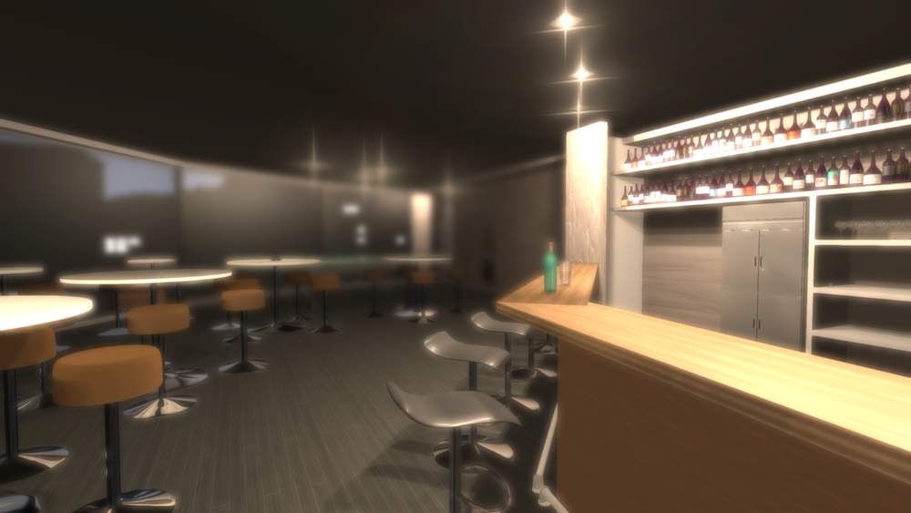
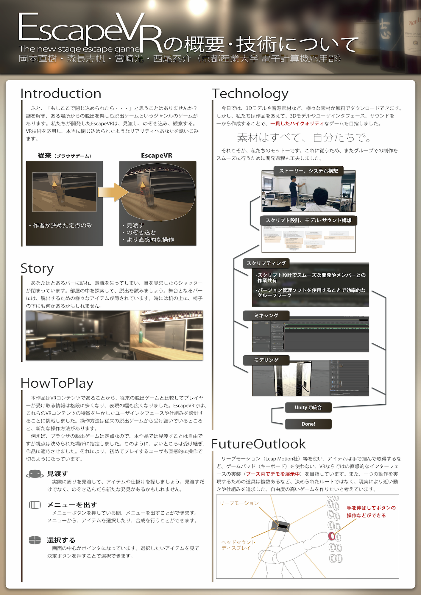
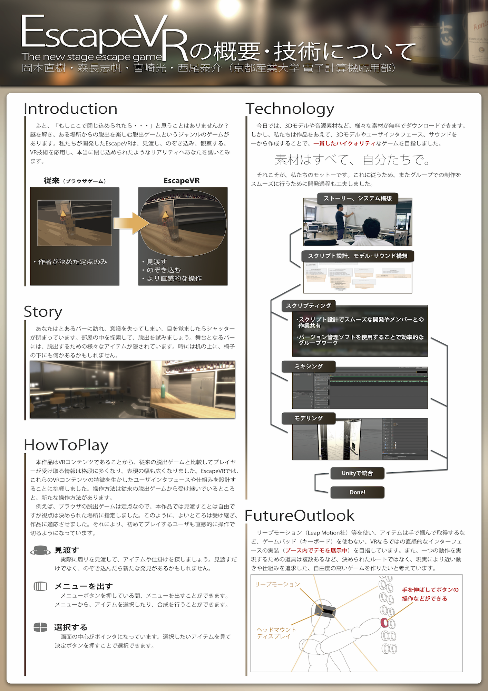

EscapeVR
Title
Director, Manager, CG Modeling, ProgramDesign, Programing, PV
Platform
Windows, Mac, Unity, Oculus Rift(DK2, CV1)
Tool
Cinema4D, AfterEffects, Photoshop, Unity, Blender, Audacity
Awards
INTERNATIONAL STUDENTS CREATIVE AWARD 2016
第22回学生CGコンテスト
Media
Kyoto Sangyo University
FM KYOTO Alpha Station
EscapeVRは、電子計算機応用部のプロジェクトとして開発されたVR脱出ゲームです。
 
